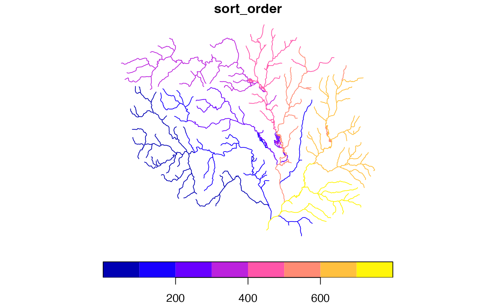

given a tree with an id and and toid in the first and second columns, returns a sorted and potentially split set of output.
Can also be used as a very fast implementation of upstream with tributaries navigation. The full network from each outlet is returned in sorted order.
get_sorted(x, split = FALSE, outlets = NULL)data.frame with an identifier and to identifier in the first and second columns.
logical if TRUE, the result will be split into independent networks identified by the id of their outlet. The outlet id of each independent network is added as a "terminalID" attribute.
same as id in x; if specified only the network emanating from these outlets will be considered and returned.
data.frame containing a topologically sorted version of the requested network and optionally a terminal id.
source(system.file("extdata/new_hope_data.R", package = "nhdplusTools"))
fpath <- get_tocomid(
dplyr::select(new_hope_flowline, COMID, FromNode, ToNode, Divergence, FTYPE,
AreaSqKM, LENGTHKM, GNIS_ID)
)
head(fpath <- get_sorted(fpath, split = TRUE))
#> Simple feature collection with 6 features and 10 fields
#> Geometry type: MULTILINESTRING
#> Dimension: XY
#> Bounding box: xmin: 1505349 ymin: 1554873 xmax: 1508920 ymax: 1558708
#> CRS: +proj=aea +lat_1=29.5 +lat_2=45.5 +lat_0=23 +lon_0=-96 +x_0=0 +y_0=0 +ellps=GRS80 +towgs84=0,0,0,0,0,0,0 +units=m +no_defs
#> comid tocomid fromnode tonode divergence ftype areasqkm
#> 1 8898302 8896658 250110375 250032382 0 ArtificialPath 0.1521
#> 2 8896658 8896656 250032382 250032381 0 StreamRiver 1.1871
#> 3 8896656 8896624 250032381 250032375 0 StreamRiver 3.8565
#> 4 8896664 8896624 250110182 250032375 0 StreamRiver 1.3770
#> 5 8896624 8896570 250032375 250032361 0 StreamRiver 1.3392
#> 6 8896572 8896570 250110161 250032361 0 StreamRiver 1.5561
#> lengthkm gnis_id terminalID geom
#> 1 0.182 983820 8897784 MULTILINESTRING ((1505349 1...
#> 2 1.371 983820 8897784 MULTILINESTRING ((1505455 1...
#> 3 2.638 983820 8897784 MULTILINESTRING ((1506375 1...
#> 4 1.641 8897784 MULTILINESTRING ((1507786 1...
#> 5 1.167 983820 8897784 MULTILINESTRING ((1508236 1...
#> 6 1.767 8897784 MULTILINESTRING ((1508311 1...
fpath['sort_order'] <- 1:nrow(fpath)
plot(fpath['sort_order'])
